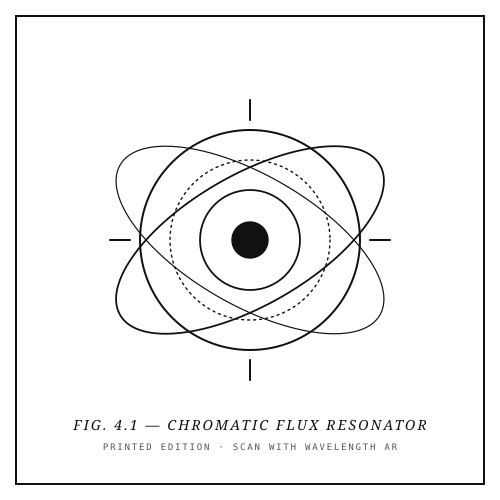

PAGE 14 · TARGET 0
2D Optical Reveal

From Black & White to Colour
Article 01 · Chromatic Flux Resonator
Printed as pure black-and-white engraving on uncoated stock. Point your camera at Fig. 4.1 to superimpose an animated, multi-spectral bioluminescent reveal.